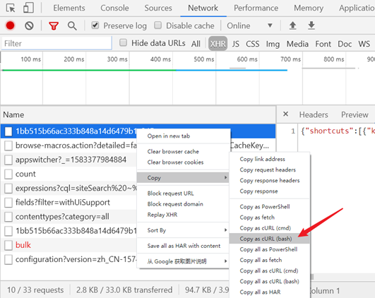
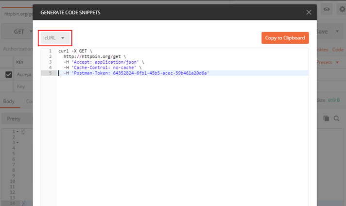
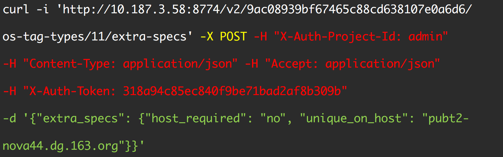
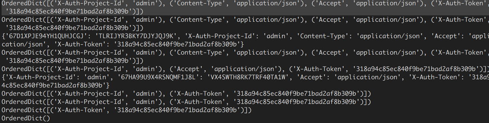
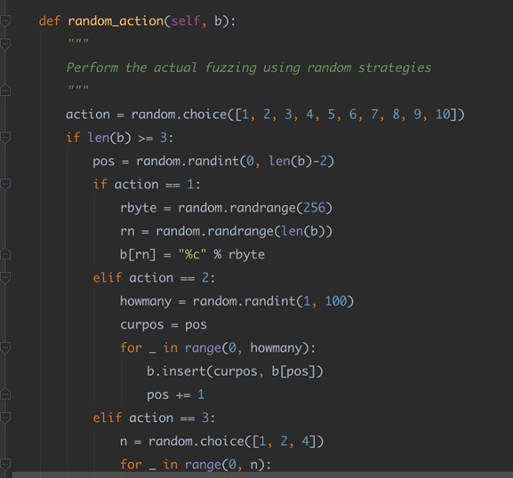
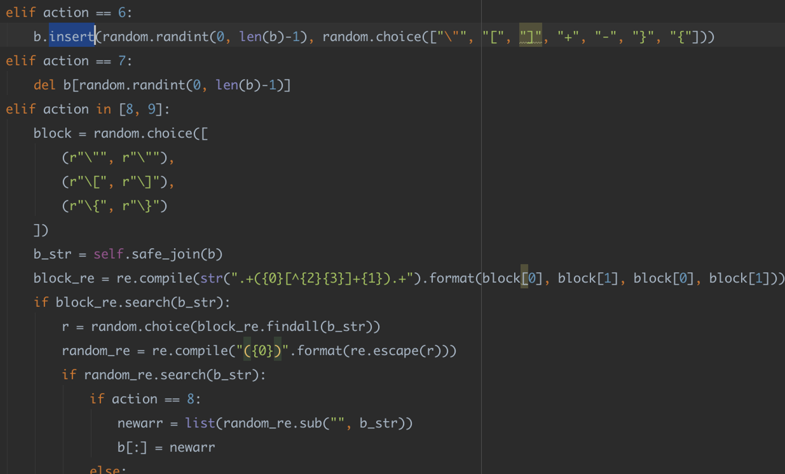
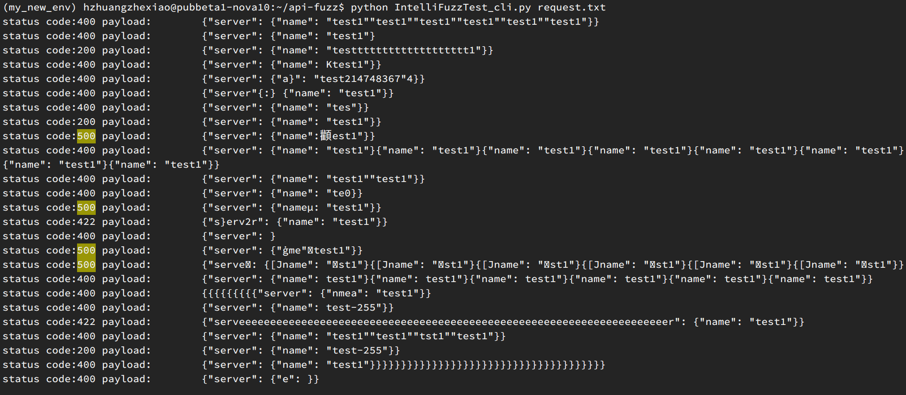
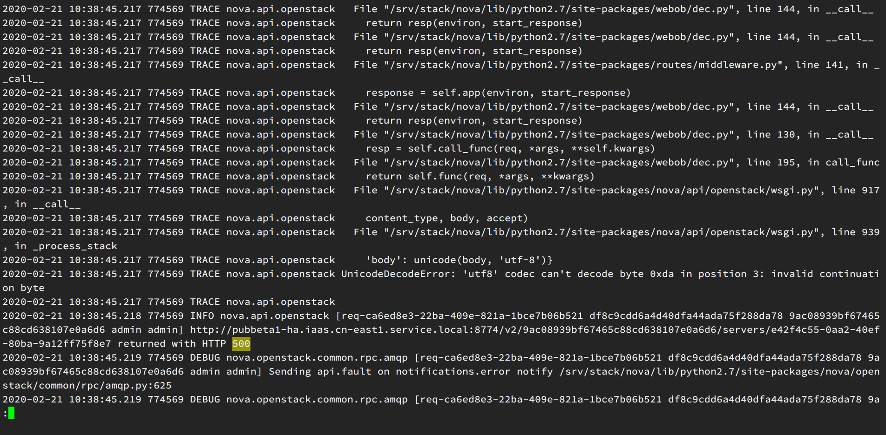
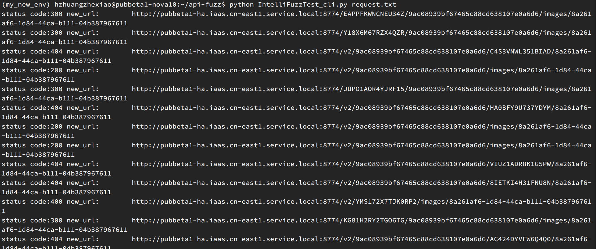

安装
1
2
|
git clone ssh://git@g.hz.netease.com:22222/CloudQA/api-fuzz.git
pip install -r requirements.txt
|
快速开始
将curl 请求体放进 request.txt 文件中，执行命令
1
|
python IntelliFuzzTest_cli.py request.txt
|
特点
- 支持请求body体变异
- 支持请求url path 变异
- 随机增删请求header
- 支持post/get/delete/put方法
- 可以直接根据curl命令进行变异
背景
在日常测试工作中，经常会有api接口的测试，除了正向流程的测试之外，我们经常还需要覆盖一些异常情况。
例如：
- 不合法字符串
- 字符串超长
- 应该是数字类型的，传入了字母
- 参数为空
- 传入了中文，标点符号等
- sql注入等等
事实上，我们组的接口测试demo框架中，在dataprovider中也经常能够看到诸如下面的例子。
1
2
3
4
5
6
7
8
9
10
11
12
13
14
15
16
17
18
19
20
|
@DataProvider(name = "testIllegalName")
public static Object[][] testIllegalName(){
return new Object[][]{
//name
{null, 400, "域名为空或者域名非法"},
{"", 400, "域名为空或者域名非法"},
{"abcdefghijilmnopqrstu", 400, "域名为空或者域名非法"},
{" ", 400, "域名为空或者域名非法"},
{"12", 400, "域名为空或者域名非法"},
{"-12", 400, "域名为空或者域名非法"},
{"0.2", 400, "域名为空或者域名非法"},
{"abcdefghij0123456789abcdefghij0123456789abcdefghij0123456789abcd.com", 400, "域名为空或者域名非法"},
{"zxq.qa.com", 400, "域名为空或者域名非法"},
{"zxq_qa.com", 400, "域名为空或者域名非法"},
};
}
|
此处是看看接口在传入非期望值的时候，能不能够很好的处理类似请求。
除此以外，还有一些和业务场景强相关的值类型，比如网络测试的时候，我们会关心cidr的格式；计费测试的时候，又特别关注数字的类型。
一方面，给每个接口增加类似的异常接口测试相对比较无趣；另一方面，我们作为人，考虑问题，不管是开发还是测试，都难免挂一漏万，有一些边边角角的case没能考虑到。
既然如此，我们能否统一抽象出来一种接口异常测试的框架，自动 注入各种类型的异常，然后将凡是服务没有捕获的，抛出trace, exception 的，记录下请求的payload，为后续验证覆盖提供支撑。
原理
主要使用了模糊测试技术（fuzz testing, fuzzing）。其核心思想是自动或半自动的生成随机数据输入到一个程序中，并监视程序异常，如崩溃，断言(assertion)失败，以发现可能的程序错误，比如内存泄漏。
简单的模糊测试随机输入数据，而更加高效的模糊测试，需要理解对象结构或者协议。通过向数据内容，结构，消息，序列中引入一些异常，来人为的构造聪明的模糊测试。
如果你持续关注文件系统或内核技术，你一定注意过这样一篇文章：Fuzzing filesystem with AFL。Vegard Nossum 和 Quentin Casasnovas 在 2016 年将用户态的 Fuzzing 工具 AFL（American Fuzzing Lop）迁移到内核态，并针对文件系统进行了测试。
结果是相当惊人的。Btrfs，作为 SLES（SUSE Linux Enterprise Server）的默认文件系统，仅在测试中坚持了 5 秒钟就挂了。而 ext4 坚持时间最长，但也仅有 2 个小时而已。(https://zhuanlan.zhihu.com/p/28828826)
所以基于此，在api接口测试中引入模糊测试理论上也是可行的，而且是有效的。
导出curl命令
我们选择curl命令作为我们程序的输入。为什么选择curl命令呢，因为许多工具支持导出到curl。例如，openstack k8s的cli client都支持导出到curl
1
2
3
|
nova --debug rename e9211f78-d01e-4fc7-ab85-0ae5ccb80c6a aaaa
kubectl --v=9 get pod nginx-6c6dfb7d8d-2rb7z -o yaml
|
此外，类似chrome以及postman等工具也支持导出到curl


解析curl请求
对于一个curl请求，我们可以将其分解为几部分

可以看到，一个curl请求主要包括
变异
通过以下流程，分别变异URL path，随机增删header，body体json变异等。然后将变异后的参数进行拼装成一个request请求。
对于header体，解析到一个OrderDict，进行随机增删。

对于body，随机变异json体。


变异类型众多，在此不再赘述。
demo
目前 IntelliFuzzTest 工具支持get/post /put/delete等类型的请求响应。
例如更新云主机接口
1
|
curl 'http://pubbeta1-ha.iaas.cn-east1.service.local:8774/v2/9ac08939bf67465c88cd638107e0a6d6/servers/e42f4c55-0aa2-40ef-80ba-9a12ff75f8e7' -X PUT -H "X-Auth-Project-Id: admin" -H "User-Agent: python-novaclient" -H "Content-Type: application/json" -H "Accept: application/json" -H "X-Auth-Token: c8e48bd22b0346539276c407e1ce1b47" -d '{"server": {"name": "test1"}}'
|
将curl请求放入request.txt中。执行模糊测试

我们即可以看到一些服务端异常产生。
我们看一眼服务端日志

即可以看到是因为默写编码异常导致的错误。
body体的json变异类型还是很丰富的。举例来说：
1
2
3
4
5
6
7
8
9
10
11
12
13
14
15
|
(hzx_env) hzhuangzhexiao@pubbeta1-nova10:~$ curl -i http://pubbeta1-iaas.service.163.org:9797/v2.0/security-group-rules.json -X POST -H "X-Auth-Token: af75ed821eeb4d5c9e88fb4ba804ff48" -H "Content-Type: application/json" -H "Accept: application/json" -H "User-Agent: python-protonclient" -d '{"security_group_rule": {"direction": "ingress", "protocol": "tcp", "ethertype": "IPv4", "port_range_max": "6660", "security_group_id": "48b9cc1e-53f8-4f7e-8983-bffb209153f3", "port_range_min": "80", "remote_ip_prefix": "0.0.0.0/"}}'
HTTP/1.1 500
Content-Type: application/json;charset=ISO-8859-1
Content-Length: 6310
Date: Tue, 14 Nov 2017 05:59:10 GMT
Connection: close
An unknown exception occurred.
java.lang.ArrayIndexOutOfBoundsException: 1
at com.netease.cns.proton.server.service.SecurityGroupServiceImpl.validateIpPrefix(SecurityGroupServiceImpl.java:385)
at com.netease.cns.proton.server.service.SecurityGroupServiceImpl.createSecurityGroupRule(SecurityGroupServiceImpl.java:228)
at sun.reflect.GeneratedMethodAccessor385.invoke(Unknown Source)
at sun.reflect.DelegatingMethodAccessorImpl.invoke(DelegatingMethodAccessorImpl.java:43)
at java.lang.reflect.Method.invoke(Method.java:498)
|
打印出变异的body体：
1
2
3
4
5
6
7
8
9
10
11
12
13
14
15
16
17
18
19
20
21
22
23
24
25
26
|
{"network": {"cidr": "20.100.0.0/16", "name": "hzx-vpc-test1D, "admin_state_up"_ true}}
{"network": {"cidr": "20.100.0.0/16", "name": "hzx-vpc-test-1", "admin_state_up": true}}
{"network": {"cidr": "20.100.0.0/16", "name": "hzx-vpc-test1", "admin_state_up": true}}
{"network": {"cidr": "20.100.0.0/16", "name": "hzx-vpc-test1", "admin_state_utrue}}
{"network-": {"cidr": "20.100.0.0/16", "name": "hzx-vpc-test1", "admin_state_uuuuuuuuuuuuuuuuuuuuuuuuuuuuuuuuuuuuuuuuuuuuuuuuuuuuuuuuuuuuuuuup": true}}
{"network": {"cidr": "20.1.0/16", "name": "hzx-vpc-test1", "admin_state_up": true}}
{"network": {"cidr": "20.100.0.0/16", "name": "hzx-vpc-test1", : tru}e}
{"network": {"cidr": "20.100.0.0/16", "name": "hzx-vp¸-test1", "admin_state_up": true}}
{"network": {"cidr": "20.100.0.0/16", "name": "hzx-vpc-test1"ՠ: true}}
{"network": {"cdr": "20100..0.0/16", "name": "hzx-vpc-test1", "admin_state_up": true}}
{"network": {"cidr": "20.100.0.0/16", "name": "hzx-vpc-test1", "admin_stap"::: true}}
{"network": {"cidr": "20.100.0.0/16", "name": hzx-vpc-test1", "admin_state_up": true}}
"network": {"cidr": "20.100.0.0/16", "name": "hzx-vpc-test1", "admin_state_up": true}}
{"network": {"cidr": "20.100.0.0/16", "name": "hzx-vpc-test1", "admin_state_up":} true}}
{"neeeeeeeeeeeeeeeeeeeeeeeeeeeeeetwork": {"cidr": "20.100.0.0/16", "name": "hzx-vpc-test1", "admin_state_up""admin_state_up""admin_state_up""admin_state_up""admin_state_up""admin_state_up""admin_s,ate_up""admin_state_up""admin_state_up": true}}
{"network": }
"n{et���: r{"cidr": "0.}0.0/-34359738368", "naD: true}}
{"network": }
{"[network": {"cidr": "20.-214748364800.0.0/16", "name": "hzx-vpc-test1", "admin_state_up": true}}
{"network": {"cidr": "20.100.0.0/16", "name": "hzx-vpc-test1", "admin_state_up": true}{"cidr": "20.100.0.0/16", "name": "hzx-vpc-test1", "admin_state_up": true}{"cidr": "20.100.0.0/16", "name": "hzx-vpc-test1", "admin_state_up": true}}
{"network": {"cidr": "20.1000.0/+.16", "name": "hzx-vpc-test1", "admin_state_up": true}}
{"network": {"cidr": "20.100.0.0/16", "name": "hzx-vpc-test1", "admin_state_up""admin_state_up""admin_state_up": true}}
{"networ[k": {"cidr": "20.100.0.0/16", "name": "hzx-vpc-test1", "admin_state_up": true}}
{"network": {"cidr": "20.100.0.0/-4080", "name": "hzx-vpc-test1", "admin_state_up": true}}
{"network": {"cidr": "20.100.0.0/-4080", "name": "hzx-vpc-test1", "admin_state_up": true}}
{"network": {"cidr": "20.-25500.0.0/16", "name": "hzx-vpc-test1", "admin_stateeeeeeeeeeeeeeeeeeeee_up": true}}
|
GET类型请求可以对url path进行模糊注入。

另外，还支持对请求的header进行随机增删，模拟请求等。
请戳 https://g.hz.netease.com/CloudQA/api-fuzz 进行试用。